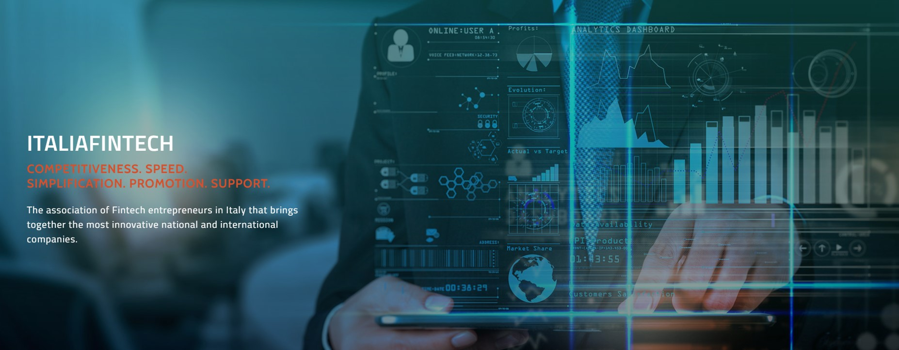

How was Fintech adopted in Italy?
In recent years, the term Financial Technology (FinTech) has been coined to describe a wide range of services for various types of organizations that are aided by various financial technologies. FinTech primarily addresses the advancement of quality of financial products and services supported by Information Technology (IT) applications. FinTech has grown in importance in Italy because of several factors, including technological advancements, business innovation, the drive to save costs, and the need to improve client relationships. Due to the multidisciplinary, expanded use of integrated platforms, and rising demand for such services, the rapid adoption of FinTech has posed a significant issue. FinTech is aided by the development of cutting-edge technologies, the most important of which are those that may uncover hidden data from a variety of sources and so improve the decision-making process in SMEs, affect security, and facilitate customer communication. Almost all banks in Italy decided to take new paths at the end of the first decade of the twenty-first century, beginning a process of exploiting digital opportunities and moving clients onto more agile and less costly channels (i.e., Internet Banking and Mobile Banking), imagining novel ways of serving clients and generating profit.